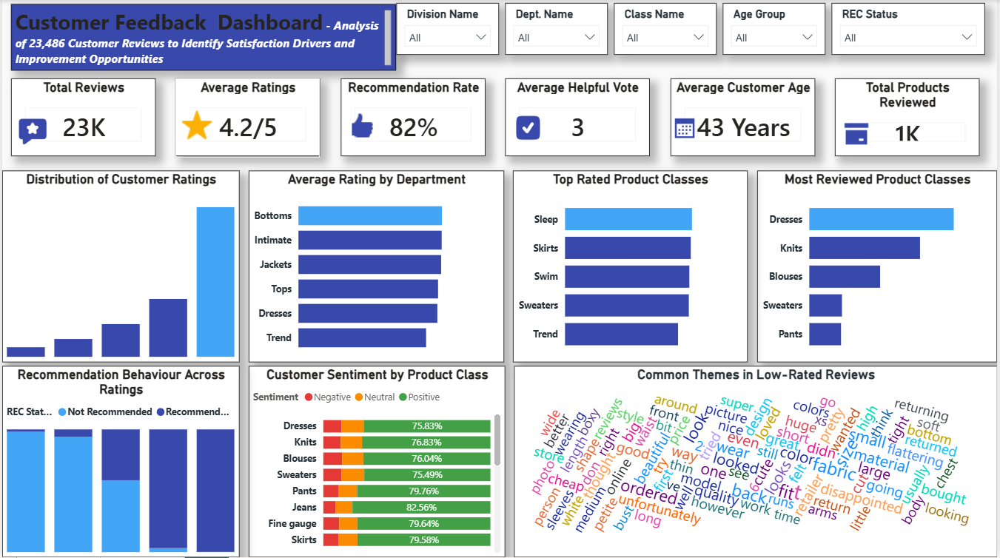

Turning 23,486 unstructured customer reviews into a dashboard a merchandising team could actually use to decide what to fix first.
A retailer had 23,486 customer reviews sitting in a raw export and no structured read on what shoppers actually thought of the product line. Which departments were underperforming on satisfaction? Did recommendation behaviour actually track with star ratings? And what were customers repeatedly complaining about in the reviews that never got fixed?
I cleaned and structured the review dataset, then built a Power BI dashboard that could be filtered live by division, department, product class, age group, and recommendation status — not a static report, something a merchandising lead could actually interrogate.
The finished Power BI dashboard — filterable by division, department, class, age group, and recommendation status.

The sentiment-by-product-class view surfaced categories — like Sweaters and Blouses — sitting at a lower sentiment score than their star rating alone would suggest, meaning a ratings-only view was masking a real satisfaction gap. The low-rated review word cloud consistently surfaced fit, sizing, and fabric quality as the recurring complaint themes, giving merchandising a concrete, prioritized starting point instead of a vague "reviews are mixed" summary.
Want the full breakdown — queries, data model, or wireframes?
View full repo on GitHub